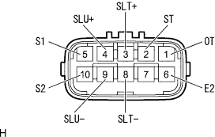
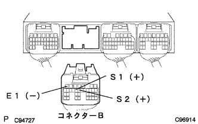

DTC P0753/62 S1 Solenoid system |
DTC P0758/63 S2 Solenoid system |
| DTC No. | DTC detection conditions 1. Diagnosis conditions 2. Abnormal state 3. Announced period | Inspection site |
|---|---|---|
| P0753/62 |
|
|
| P0758/63 |
|
|
| Step 1 | Transmission wire single inspection (S1/S2) |
|  |
Cut the transmission wire connector.
Use SST (Toyota Electrical Tester) to inspect the resistance between each terminal.
| Terminal number (terminal symbol) | Resistance value [ω] |
|---|---|
| 5 (S1) ← → Body Earth | 11-15 (20 ° C) |
| 10 (S2) ← → Body Earth | 11-15 (20 ° C) |
| situation | procedure |
|---|---|
| S1 abnormality | To ng (a) |
| S2 abnormality | To ng (b) |
| normal | To OK |
|
| ||||
|
| ||||
| OK | |
| Step 2 | Wire harness or connector inspection (transmission wire-engine control computer) |
Connect the connector of the transmission wire and separate the engine controlled compilation connector B.
|  |
Use SST (Toyota Electrical Tester) to inspect the resistance between each terminal.(The terminal array isreference)
| Terminal number (terminal symbol) | Resistance value [ω] |
|---|---|
| B15 (S1) ← → B7 (E1) | 11-15 (20 ° C) |
| B14 (S2) ← → B7 (E1) | 11-15 (20 ° C) |
|
| ||||
| OK | ||
| ||
| Step 3 | Transmission 3 Way Solenoid ASSY (ATM) Single inspection (S1) |
Separate the connector of the automatic transmission 3 Way Solenoid ASSY (S1).
Use SST (Toyota Electrical Tester) to inspect the resistance between the solenoid terminal and the body.
|
| ||||
| OK | ||
| ||
| Step 4 | Transmission 3 Way solenoid ASSY No.2 Single inspection (S2) |
Transmission 3 Way Solenoid No.2 (S2) connectors separate the connector.
Use SST (Toyota Electrical Tester) to inspect the resistance between the solenoid terminal and the body.
|
| ||||
| OK | ||
| ||